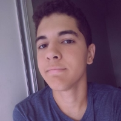

 Charles Bruno Ferreira de Morais Jr.
Sobre mim
Nascido em Governador Valadares, em Minas Gerais, no dia 22 de dezembro de 2002, Charles hoje é aluno do 3º ano de Informática para Internet Integrado no
IFES
- Campus Serra.
Sonhos
- Dominar a língua inglesa
- Formar em Ciência da Computação
- Conhecer outras cidades pelo mundo, como Londres, Tóquio e Nova Iorque
Contato
- Telefone: (27)99502-8291
- Email: charles.junio02@gmail.com
- GitHub: chxrlxsjr